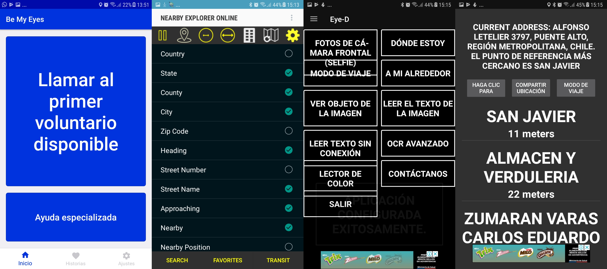
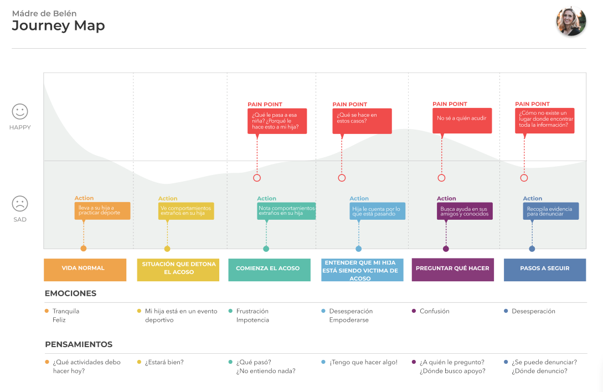
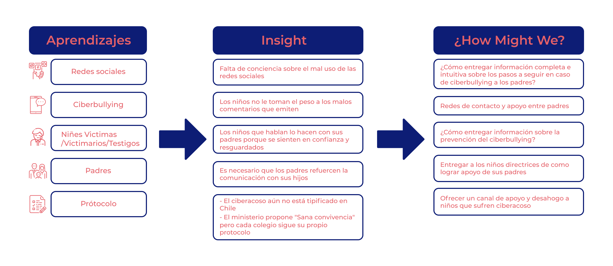
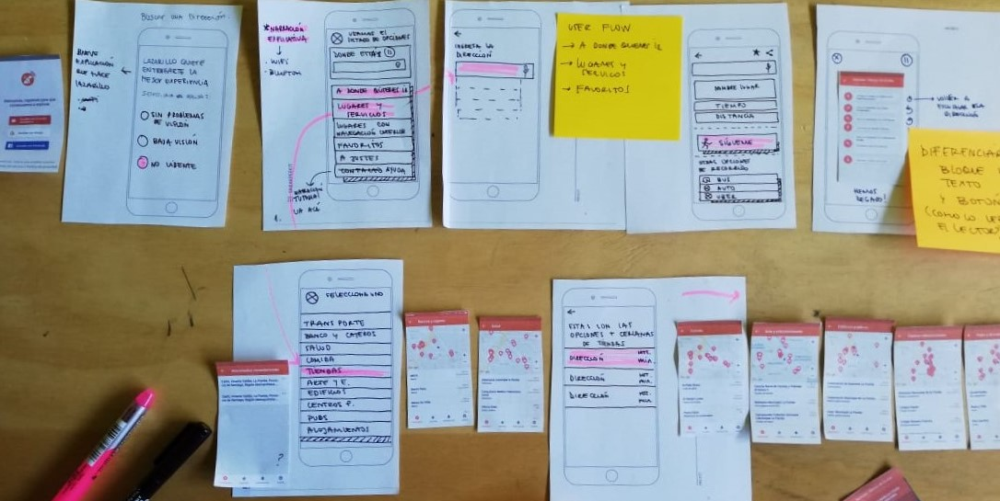
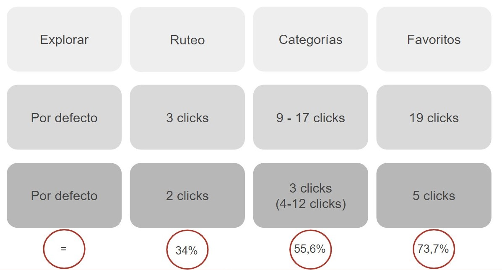

Página complementaria de la Fundación Katy Summer dirigida a padres sobre el ciberacoso.

ACERCA DEL PROYECTO
La Fundación Katy Summer nace en memoria de Katy Winter, adolescente de 16 años quien tomo la determinación de suicidarse tras ser victima del ciber bullying en el año 2018. Sus padres sintieron la necesidad de crear esta fundación con el fin de prevenir el suicidio adolescente asociado a situaciones de acoso escolar ya sea físico, verbal, escrito, psicológico y/o en redes sociales al están siendo expuestos día a día.
El desafío nos fue planteado directamente por los padres de Katy, quienes nos dieron la libertad de proponer y direccionar este proyecto de la forma que nos pareciera más acertada.
EL DESAFÍO
¿Cómo diseñar un producto digital que haga frente a los problemas del ciberacoso en Chile?
INVESTIGACIÓN
Trabajar con Lazarillo fue un gran desafío desde el comienzo, en la primera etapa nos dedicamos a entender como es que las personas ciegas y con baja visión utilizan la tecnología, como se relacionan con sus dispositivos móviles y también conocer las diversas herramientas de accesibilidad que tienen disponibles según su tipo de dispositivo, ya sean Android o iPhone.
Benchmark

Puedes revisar el análisis completo aquí
Revisamos nueve iniciativas dirigidas a problemáticas adolescentes ya sean dirigidas a jóvenes o a padres, con el fin de conocer y entender las formas en que se trabajando con ellos. Los aspectos que más nos llamaron la atención fueron los siguientes:
- La importancia de concientizar a los padres sobre el correcto uso de la tecnología en beneficio de sus hijos.
- Las diferentes dimensiones del acoso y la importancia de la convivencia escolar.
- La brecha digital entre los padres e hijos y como esta se ha convertido en un riego para los jóvenes.
- Brindar espacios seguros de acompañamiento ya sea de forma física, telefónica o digital.
Entrevistas
Padres y apoderados
Entrevistamos a un grupo de padres y apoderados con el fin de conocer su parecer con respecto al ciberacoso en adolescente y también ahondar en sus reacciones a la hora de enfrentar esta situación. Pudimos detectar que se presentan generalmente dos tipos de reacción, por una parte la normalizan el ciberacoso, lo que conlleva a no tomar conciencia de las posibles repercusiones que esto puede tener en quienes se ven afectados y por otra parte padres que quieren poner un freno a la situación que está pasando su hijo, este último caso presentan las siguientes interrogantes:
- ¿Cuáles son los pasos a seguir?
- ¿Qué evidencias necesito para denunciar?
- ¿Dónde buscar apoyo?
- ¿Cómo y dónde hago una denuncia?
- ¿Qué situaciones de acoso se pueden denunciar?
Estudiantes
Al entrevistar a estudiantes que pasaron por alguna situación de ciberacoso, consideramos relevantes los siguientes puntos:
- En algún momento pensaron que ellos eran culpables de lo sucedido.
- En inicio no tenían conciencia de que es lo que ellos podían hacer por su cuenta para lidiar con la situación.
- Tienen dificultad para identificar o definir cuando están siendo acosados o están acosando a alguien.
- Generalmente a la primera persona a quien acuden por ayuda es a sus padres.
Profesora
Tuvimos la oportunidad de realizar una entrevista a una profesora que realiza clases a cursos entre 5° y 6° básico, de la cual podemos rescatas los siguientes aprendizajes:
- Existen padres que normalizan el acoso y piensan que son cosas de la edad.
- Muchos padres al enterarse que los sus hijos están siendo acosados quieren tomar medidas inmediatas.
- Cada colegio tiene su propio protocolo de cómo abordar el acoso y ciberacoso.
- Tanto los niños que son victimas, como victimarios cumplen con una serie de patrones de conducta que se pueden identificar fácilmente.
- Es importante incentivar la comunicación de los padres con los hijos para poder evitar que un caso de ciberacoso pase a mayores.
- Muchos padres al tener que trabajar no pueden compartir tiempo con sus hijos o entablar espacios de comunicación con ellos, este es un factor importante para inculcar a los hijos en lo que vendría siendo el acoso escolar.
Customer Journey Map
CConsideramos importante utilizar esta herramienta a fin de plasmar de forma lineal una problemática en especifico, que en este caso retrata la experiencia de la madre de Belén, una chica que sufrió de ciberacoso por su entorno escolar.

PROCESO DE IDEACIÓN
En la próxima imagen podrás revisar la síntesis que realizamos a partir de toda la información recopilada durante el proceso de investigación.

El siguiente paso fue escoger al tipo de usuario en el que nos centraríamos con el fin de diseñar una propuesta acorde con sus necesidades. Decidimos enfocarnos en los padres y apoderados.

PROCESO DE DISEÑO
Wireframe
En esta etapa diseñamos nuevas pantallas que se complementaban con las ya existentes, buscábamos la forma de hacer que navegación de la app fuese lo más clara y simple posible.

Prototipo de alta
Implementamos una nueva pantalla al iniciar por 1ra vez la app, en esta se ofrece la opción de revisar el tutorial de la app y también pasar directamente a la app, donde previamente se le consulta al usuario sobre su situación de discapacidad y a partir de esto personalizar algunas características según sea el caso.

Se cambió además la disposición de los elementos centrales de una cuadricula a un listado, se re-categorizaron algunas funcionalidades con el fin de presentar un flujo más ordenado y simple al usuario.

Y finalmente se decidió cambiar la barra inferior fija anterior a una en la que solo se presentan 3 opciones al usuario ¿Donde estoy?, pausar o reanudar una exploración y repetir la última indicación, esto con la intensión permitir un rápido acceso a estas funcionalidades que son primordiales para la negación de un espacio.
A continuación puedes revisar un video del prototipo interactivo diseñado en Adobe Xd que incluye comandos de voz.
PROCESO DE VALIDACIÓN
Impacto en métricas
Generamos métricas a partir de las 4 funcionalidades principales de Lazarillo, contabilizando el número de clicks para llegar a estas en la versión actual vs. la propuesta desarrollada. En la imagen se visualiza la comparación en el número de clicks y cómo se traduce la disminución en porcentaje (%).

Testeo con usuarios
El testeo se realizó en el colegio para ciegos Santa Lucía en la comuna de La Cisterna, a partir de este se pudieron recoger los siguientes resultados y aprendizajes:
Testeo a personas ciegas
- El botón “Sígueme”, no les hace sentido “podría ser ir a pie”, necesitan un mensaje más directo.
- Los usuarios que ya llevan tiempo usando Lazarillo prefieren la disposición en cuadrícula, ya que les permite acceder directamente a alguna opción y memorizar.
- Los usuarios no entendieron El botón “Lugares accesibles” ya que no lograban interpretar la frase utilizada.
Testeo a personas con baja visión
Esta era una versión en la que se aplicaba alto contraste, por lo que todo el color rojo de la versión clásica de la app en esta era de color negro.
- La disposición en cuadrícula les permite recordar las siluetas de los iconos.
- El contraste ayuda bastante a una mejor visualización.
- Quisieran haber podido usar una lupa para ver mejor.